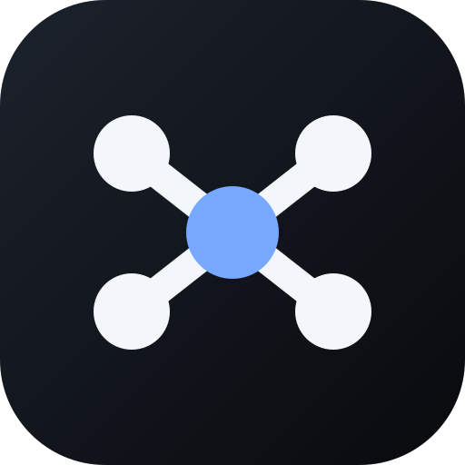

Agent Relay · 桌面图标方案
每款都是独立矢量图；下方小图展示接近 iPhone 桌面上的辨识度。
A / RELAY
接力路径
一条连接路径与终点，强调远程接力。Agent Relay
B / CHAT
对话连接
对话气泡加向前箭头，突出会话。Agent Relay
C / FLOW
双向流转
双向箭头，突出设备间消息往返。Agent Relay

D / HUB
信号中继
四个端点围绕中继核心，强调连接。Agent Relay
预览保留深色底色，便于在浅色和深色壁纸上识别。